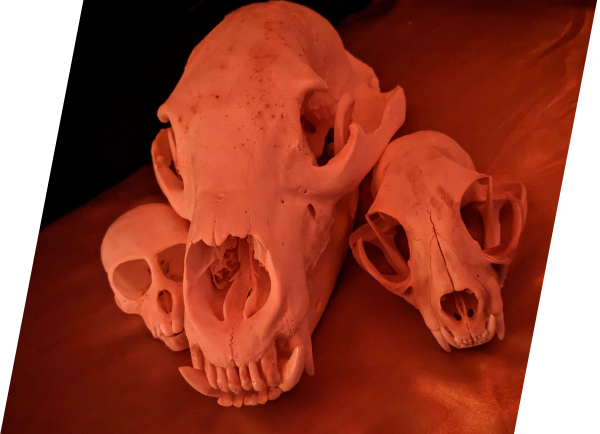

What Is Taxidermy?
In simple terms, taxidermy is the art of using dead animals to create mounts(which taxidermy is mostly known for), specimens and more. These are used either for display, research or just plain fun. Each is professionally and skillfully prepared to be as full of life as the animal once was before. As an art, taxidermy feeds off of the curiosity of life and death. What is, and what isn't.The art of taxidermy itself has been found in history as early as 2200 BC, which was back when they would preserve and mummify the pharoah's many animals and bury them in tombs using certain oils, injections and spices. Nowadays, taxidermy is not only more advanced, but has grown and branched from just simple preservation. There's a lot more to taxidermy than just mounts, and if you're here, you're interested in it.